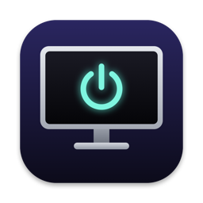

Turn off any display on your Mac. Leave the rest on.
DownloadA small menu bar app and command line tool that switches individual displays off and back on.
Dimming to zero leaves the backlight glowing, and the power button usually cuts charging too. ScreenOff only stops the signal, so the monitor sleeps and keeps powering your Mac.
It's open source, has no dependencies, and every release is signed with a Developer ID and notarized by Apple.
ScreenOff stops the video signal and nothing else. The monitor stays powered in standby, so Power Delivery over USB-C keeps charging your MacBook.
Switch a monitor off with its power button, or over DDC, and most of them stop charging along with the picture.
Studio Display, built-in panels, and monitors that ignore DDC power commands or drop off the bus when you try.
macOS treats a display that's off as unplugged, so your windows move to the screens you're using and come back later.
A volume slider and mute for monitor speakers over DDC, for HDMI and DisplayPort audio that macOS won't let you adjust.
Turn off every external display at once, then bring them all back.
The last active display can't be turned off, and quitting the app turns everything back on.
Lives in the menu bar and starts with your Mac if you want it to.
~ % screenoff list ID STATE NAME 1 on Built-in Retina Display [main, built-in] 2 on LG UltraFine 3 on Studio Display ~ % screenoff off studio Studio Display -> off ~ % screenoff volume lg 40 LG UltraFine: 40/100 ~ % screenoff on All displays are on.
Any part of a display's name works, and case doesn't matter. The CLI and the menu bar app share state, so either one can turn back on what the other turned off.
ScreenOff is free and always will be. If it saves you some time or a bit of power, you can sponsor its development on GitHub.
Sponsor